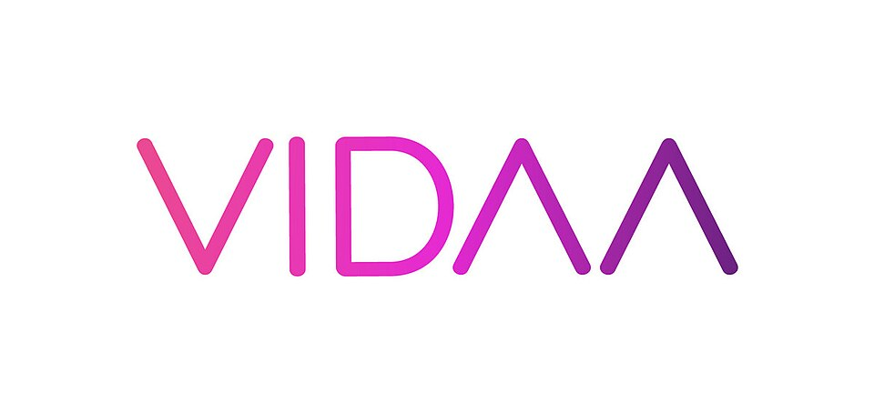
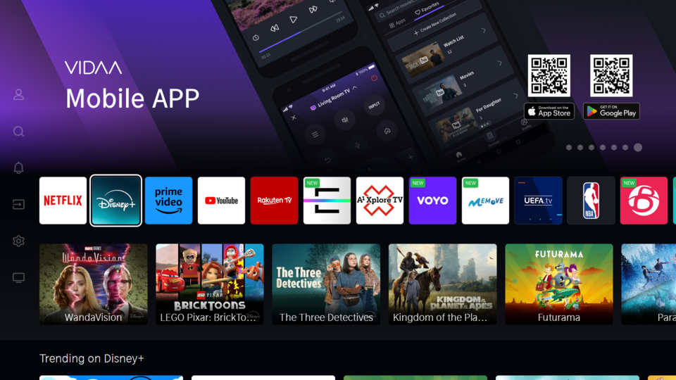

Αν έχεις τηλεόραση Samsung και ψάχνεις iptv on tizen, μάλλον θέλεις να δεις ελληνικά κανάλια απευθείας από την οθόνη σου, χωρίς επιπλέον box, καλώδια και πολύπλοκες ρυθμίσεις. Το Tizen είναι το λειτουργικό σύστημα που τρέχει στις περισσότερες Samsung Smart TV των τελευταίων ετών, και σου επιτρέπει να εγκαταστήσεις εφαρμογές αναπαραγωγής IPTV, να φορτώσεις μια λίστα καναλιών και να απολαύσεις ειδήσεις, αθλητικά, σειρές και ταινίες στο σαλόνι σου.
Η διαδικασία όμως δεν είναι πάντα προφανής. Δεν υπάρχει μία εφαρμογή που να δουλεύει παντού, οι εκδόσεις Tizen διαφέρουν ανά έτος κατασκευής και ορισμένες εφαρμογές δεν εμφανίζονται σε όλες τις χώρες. Επιπλέον, η ποιότητα της εμπειρίας εξαρτάται από δύο πράγματα: την εφαρμογή που θα επιλέξεις και την υπηρεσία που θα συνδέσεις σε αυτήν. Μια αξιόπιστη υπηρεσία όπως το greek iptv κάνει τη διαφορά, γιατί προσφέρει σταθερή ροή και υποστήριξη όταν τη χρειάζεσαι.
Σε αυτόν τον οδηγό θα δεις τι ακριβώς σημαίνει IPTV σε Tizen, ποιες τηλεοράσεις το υποστηρίζουν, τι χρειάζεσαι πριν ξεκινήσεις, πώς γίνεται η ρύθμιση βήμα προς βήμα και πώς να λύσεις τα πιο συχνά προβλήματα. Αν σε ενδιαφέρει το ευρύτερο πλαίσιο της ελληνική τηλεόραση εκτός Ελλάδας, διάβασε και τον σχετικό οδηγό μας. Ας ξεκινήσουμε από τα βασικά.
Περιεχόμενα
- Τι Είναι το IPTV on Tizen
- Ποιες Τηλεοράσεις Samsung Υποστηρίζουν Tizen
- Τι Χρειάζεσαι Πριν Ξεκινήσεις
- Πώς να Ρυθμίσεις IPTV σε Tizen Βήμα προς Βήμα
- Οι Καλύτερες Εφαρμογές IPTV για Tizen
- Ελληνικά Κανάλια στο Samsung TV
- Βελτιστοποίηση Ποιότητας και Ταχύτητας
- Συνηθισμένα Προβλήματα και Λύσεις
- Ασφάλεια και Καλές Πρακτικές
- Συχνές Ερωτήσεις
- Συμπέρασμα
Τι Είναι το IPTV on Tizen
Το Tizen είναι ένα λειτουργικό σύστημα που αναπτύσσει η Samsung και χρησιμοποιεί σε Smart TV, ρολόγια και άλλες συσκευές. Στις τηλεοράσεις, το Tizen τρέχει το Smart Hub, δηλαδή το κεντρικό μενού με τις εφαρμογές σου. Όταν λέμε iptv on tizen, εννοούμε την παρακολούθηση τηλεοπτικών καναλιών μέσω διαδικτύου με μια εφαρμογή εγκατεστημένη στην Samsung TV σου.
Πώς Λειτουργεί η Ροή
Η υπηρεσία IPTV στέλνει τα κανάλια ως ροή δεδομένων. Η εφαρμογή στην τηλεόραση διαβάζει μια λίστα (συνήθως M3U) ή συνδέεται μέσω στοιχείων Xtream Codes, και αναπαράγει το περιεχόμενο. Δεν χρειάζεσαι κεραία ή πιάτο, μόνο σύνδεση στο internet.
Πλεονεκτήματα του Tizen για IPTV
- Χωρίς επιπλέον συσκευή: η εφαρμογή τρέχει απευθείας στην τηλεόραση.
- Άνετο περιβάλλον: χειρίζεσαι τα κανάλια με το τηλεχειριστήριο.
- Υποστήριξη υψηλής ανάλυσης: ανάλογα με το μοντέλο, Full HD και 4K.
- Ενιαίο σημείο πρόσβασης: όλα τα κανάλια και το on demand περιεχόμενο σε ένα μέρος.

Ποιες Τηλεοράσεις Samsung Υποστηρίζουν Tizen
Οι περισσότερες Smart TV της Samsung που κυκλοφόρησαν από το 2015 και μετά τρέχουν Tizen, σε διαφορετικές εκδόσεις. Οι νεότερες σειρές (QLED, Neo QLED, Crystal UHD, The Frame και άλλες) έχουν ισχυρότερους επεξεργαστές και συνήθως καλύτερη υποστήριξη για απαιτητικά formats.
Πώς να Ελέγξεις το Μοντέλο σου
Πήγαινε στις Ρυθμίσεις, επίλεξε Υποστήριξη και μετά Πληροφορίες για αυτή την τηλεόραση. Εκεί βλέπεις το όνομα του μοντέλου και την έκδοση λογισμικού. Η ετικέτα στο πίσω μέρος της τηλεόρασης δείχνει επίσης τον κωδικό μοντέλου.
Παλαιότερα Μοντέλα
Οι παλιές τηλεοράσεις μπορεί να έχουν περιορισμένη μνήμη και να μη δέχονται τις τελευταίες εκδόσεις εφαρμογών. Αν η εφαρμογή σου κολλάει, ένα μικρό Android TV box ή stick είναι μια οικονομική εναλλακτική. Δες τον οδηγό μας για το iptv box αν θες να εξετάσεις αυτή τη λύση.
Τι Χρειάζεσαι Πριν Ξεκινήσεις
Πριν εγκαταστήσεις οτιδήποτε, φρόντισε να έχεις έτοιμα τα παρακάτω, ώστε η διαδικασία να ολοκληρωθεί σε λίγα λεπτά.
Σύνδεση Internet
Για HD ροή αρκούν περίπου 10 Mbps, ενώ για Full HD και 4K προτείνονται 25 Mbps και πάνω. Αν γίνεται, συνδέστε την τηλεόραση με καλώδιο Ethernet. Το Wi-Fi 5 GHz είναι δεύτερη καλύτερη επιλογή, αρκεί ο router να βρίσκεται κοντά.
Ενεργή Συνδρομή
Χρειάζεσαι μια υπηρεσία IPTV με στοιχεία πρόσβασης: URL M3U ή στοιχεία Xtream (διακομιστής, όνομα χρήστη, κωδικός). Με το Greek IPTV τα παραλαμβάνεις αμέσως μετά την ενεργοποίηση.
Ενημερωμένο Λογισμικό
Ενημέρωσε την τηλεόραση από Ρυθμίσεις → Υποστήριξη → Ενημέρωση λογισμικού. Οι νέες εκδόσεις διορθώνουν σφάλματα και βελτιώνουν τη συμβατότητα των εφαρμογών.
| Στοιχείο | Ελάχιστο | Προτεινόμενο |
|---|---|---|
| Ταχύτητα internet | 10 Mbps | 25+ Mbps |
| Σύνδεση τηλεόρασης | Wi-Fi | Ethernet |
| Λογισμικό | Εγκατεστημένο | Τελευταία ενημέρωση |
| Υπηρεσία IPTV | Λίστα M3U | Επαγγελματική συνδρομή |
Πώς να Ρυθμίσεις IPTV σε Tizen Βήμα προς Βήμα
Η διαδικασία είναι απλή αν ακολουθήσεις τη σωστή σειρά. Τα ονόματα των μενού μπορεί να διαφέρουν ελαφρώς ανά έκδοση.
Βήμα 1: Εγκατάσταση Εφαρμογής από το Smart Hub
Άνοιξε το Smart Hub, πήγαινε στις Εφαρμογές και χρησιμοποίησε την αναζήτηση για μια εφαρμογή αναπαραγωγής IPTV. Επίλεξε Εγκατάσταση και περίμενε να ολοκληρωθεί. Αν δεν βρίσκεις αυτό που θες, δοκίμασε άλλη εφαρμογή ή δες το επόμενο βήμα.
Βήμα 2: Προσθήκη Λίστας ή Στοιχείων Xtream
Άνοιξε την εφαρμογή και επίλεξε προσθήκη playlist. Εισήγαγε το URL M3U ή τα στοιχεία Xtream. Ορισμένες εφαρμογές σου δίνουν έναν κωδικό συσκευής (MAC address) και σε αφήνουν να ανεβάσεις τη λίστα από τον υπολογιστή μέσω ιστοσελίδας.
Βήμα 3: Φόρτωση EPG και Καναλιών
Μετά την προσθήκη, περίμενε να φορτώσουν τα κανάλια και ο οδηγός προγράμματος. Αν η λίστα είναι μεγάλη, η πρώτη φόρτωση μπορεί να πάρει λίγο χρόνο. Βάλε στα αγαπημένα τα κανάλια που βλέπεις συχνά.
Βήμα 4: Developer Mode (Μόνο Αν Χρειάζεται)
Αν μια εφαρμογή δεν διατίθεται στο κατάστημα, ορισμένοι χρήστες χρησιμοποιούν το Developer Mode της Samsung. Ανοίγεις τις Εφαρμογές, πληκτρολογείς τον κωδικό που ζητά το σύστημα, ενεργοποιείς το Developer Mode και ορίζεις τη διεύθυνση IP του υπολογιστή σου. Η μέθοδος απαιτεί προσοχή: εγκατάστησε μόνο εφαρμογές από αξιόπιστες πηγές και ακολούθησε τις οδηγίες του δημιουργού τους.

Οι Καλύτερες Εφαρμογές IPTV για Tizen
Η διαθεσιμότητα αλλάζει, γι' αυτό σε κάθε περίπτωση έλεγξε το Smart Hub της τηλεόρασής σου. Αυτά είναι τα κριτήρια που μετράνε περισσότερο.
Τι να Ψάξεις σε μια Εφαρμογή
- Υποστήριξη M3U και Xtream Codes: για να δουλεύει με όλες τις υπηρεσίες.
- EPG: οδηγός προγράμματος με τίτλους και ώρες.
- Καθαρό περιβάλλον: ευκολία με το τηλεχειριστήριο.
- Αγαπημένα και αναζήτηση: για γρήγορη πρόσβαση.
- Τακτικές ενημερώσεις: για συμβατότητα με νέες εκδόσεις Tizen.
Παραδείγματα Εφαρμογών
Στην αγορά κυκλοφορούν εφαρμογές όπως IPTV Smarters, Smart IPTV, SS IPTV και Set IPTV. Δεν είναι όλες διαθέσιμες σε όλες τις χώρες ή τα μοντέλα, και ο κάθε δημιουργός ορίζει τους δικούς του όρους. Η ίδια η εφαρμογή είναι απλώς ένας αναπαραγωγέας: δεν περιέχει κανάλια, οπότε χρειάζεσαι πάντα μια υπηρεσία.
Άλλοι πάροχοι, όπως το tilaa iptv ή το romania iptv, απευθύνονται σε άλλες αγορές και γλώσσες. Αν στόχος σου είναι η ελληνική τηλεόραση, προτίμησε εξειδικευμένη υπηρεσία με ελληνικό περιεχόμενο και ελληνική υποστήριξη.
Ελληνικά Κανάλια στο Samsung TV
Η μεγαλύτερη αξία του IPTV για τους Έλληνες του εξωτερικού, αλλά και για όσους ζουν στην Ελλάδα, είναι η πρόσβαση σε ελληνικό περιεχόμενο όπου κι αν βρίσκεσαι. Με το Greek IPTV έχεις πρόσβαση σε +30.000 κανάλια και +150.000 ταινίες και σειρές, με ισχυρή παρουσία ελληνικών καναλιών.
Τι Μπορείς να Δεις
- Ειδήσεις και ενημερωτικές εκπομπές
- Αθλητικά κανάλια και αγώνες
- Ελληνικές σειρές και ψυχαγωγία
- Παιδικά προγράμματα
- Ταινίες και σειρές on demand
Γιατί Μια Επαγγελματική Υπηρεσία
Οι τυχαίες λίστες, για παράδειγμα playlists M3U από το GitHub, αλλάζουν συνεχώς και συχνά σταματούν να λειτουργούν. Μια υπηρεσία με υποστήριξη σού εξασφαλίζει σταθερότητα και λύση όταν κάτι δεν πάει καλά. Αν ζεις σε μικρή χώρα της Ευρώπης, δες τι ισχύει στην πράξη στον οδηγό για ελληνικά κανάλια στη Μάλτα.
Βελτιστοποίηση Ποιότητας και Ταχύτητας
Μια σωστή εγκατάσταση δεν αρκεί. Μερικές μικρές ρυθμίσεις κάνουν την εικόνα πιο σταθερή.
Δίκτυο
Χρησιμοποίησε Ethernet όπου μπορείς. Αν βασίζεσαι στο Wi-Fi, τοποθέτησε τον router κοντά και προτίμησε τη ζώνη 5 GHz. Απόφυγε να κατεβάζεις μεγάλα αρχεία την ώρα που βλέπεις αγώνα.
Ρυθμίσεις Τηλεόρασης
Ενεργοποίησε τη λειτουργία εικόνας που ταιριάζει στο περιεχόμενο (π.χ. Αθλητικά ή Ταινία). Σε αρκετά μοντέλα η Game Mode μειώνει την καθυστέρηση, αλλά δεν είναι απαραίτητη για τηλεόραση.
Ρυθμίσεις Εφαρμογής
Αν η εφαρμογή έχει επιλογή buffer ή αναπαραγωγέα, δοκίμασε μεγαλύτερο buffer για πιο σταθερή ροή. Κράτα τη λίστα καναλιών οργανωμένη: λιγότερες κατηγορίες σημαίνει ταχύτερη φόρτωση.
Συντήρηση της Τηλεόρασης
Μία φορά τον μήνα, καθάρισε την cache της εφαρμογής και έλεγξε για ενημερώσεις. Κράτα ελεύθερο χώρο αποθήκευσης στην τηλεόραση, γιατί η γεμάτη μνήμη προκαλεί καθυστερήσεις στο άνοιγμα και στην αλλαγή καναλιών. Αν χρησιμοποιείς VPN στον router, βεβαιώσου ότι δεν μειώνει δραστικά την ταχύτητα, γιατί η ροή υψηλής ανάλυσης είναι ευαίσθητη σε καθυστερήσεις.
Τέλος, δοκίμασε τη ροή σε διαφορετικές ώρες της ημέρας. Αν παρατηρήσεις προβλήματα μόνο το βράδυ, η αιτία είναι συνήθως η συμφόρηση του δικτύου του παρόχου internet σου και όχι η τηλεόραση ή η εφαρμογή. Σε αυτή την περίπτωση η καλωδιακή σύνδεση ή ένας καλύτερος router κάνουν αισθητή διαφορά.
Συνηθισμένα Προβλήματα και Λύσεις
Η Εφαρμογή Δεν Ανοίγει
Κάνε επανεκκίνηση της τηλεόρασης: βγάλ' την από την πρίζα για περίπου ένα λεπτό. Αν το πρόβλημα μένει, απεγκατέστησε και εγκατέστησε ξανά την εφαρμογή.
Κολλάει ή Κάνει Buffering
Έλεγξε την ταχύτητα του internet και δοκίμασε Ethernet. Κλείσε άλλες συσκευές που καταναλώνουν εύρος ζώνης. Αν το πρόβλημα εμφανίζεται μόνο σε ένα κανάλι, ενημέρωσε την υποστήριξη.
Δεν Φορτώνει η Λίστα
Έλεγξε ότι το URL ή τα στοιχεία Xtream είναι σωστά, χωρίς κενά στην αρχή ή στο τέλος. Σιγουρέψου ότι η συνδρομή σου είναι ενεργή.
Δεν Υπάρχει Ήχος ή Εικόνα
Δοκίμασε άλλο format ήχου στις ρυθμίσεις της εφαρμογής και ενημέρωσε το firmware. Σε ορισμένες περιπτώσεις βοηθά και η αλλαγή αναπαραγωγέα μέσα στην εφαρμογή.
Λάθος Ώρα στον EPG
Ρύθμισε τη σωστή ζώνη ώρας στην τηλεόραση και στην εφαρμογή, και ανανέωσε τον οδηγό προγράμματος.
Ασφάλεια και Καλές Πρακτικές
Η ασφάλεια έχει σημασία, ειδικά όταν εγκαθιστάς εφαρμογές εκτός επίσημου καταστήματος.
Εγκατάσταση από Αξιόπιστες Πηγές
Προτίμησε εφαρμογές από το Smart Hub. Αν χρειαστεί Developer Mode, χρησιμοποίησε μόνο πακέτα από γνωστούς δημιουργούς και απενεργοποίησε το Developer Mode όταν τελειώσεις.
Προστασία Στοιχείων
Μη μοιράζεσαι τα στοιχεία της συνδρομής σου και μη τα εισάγεις σε άγνωστες ιστοσελίδες. Χρησιμοποίησε ισχυρούς κωδικούς και κράτα το δίκτυό σου προστατευμένο.
Νόμιμη Χρήση
Βεβαιώσου ότι χρησιμοποιείς υπηρεσίες που σέβονται τους κανόνες της χώρας σου και ότι γνωρίζεις τους όρους χρήσης τους. Η επιλογή ενός αξιόπιστου παρόχου μειώνει τα ρίσκα.
Έτοιμος να ξεκινήσεις; Δες τα πακέτα στο Greek IPTV και συνδέσου μέσα σε λίγα λεπτά.